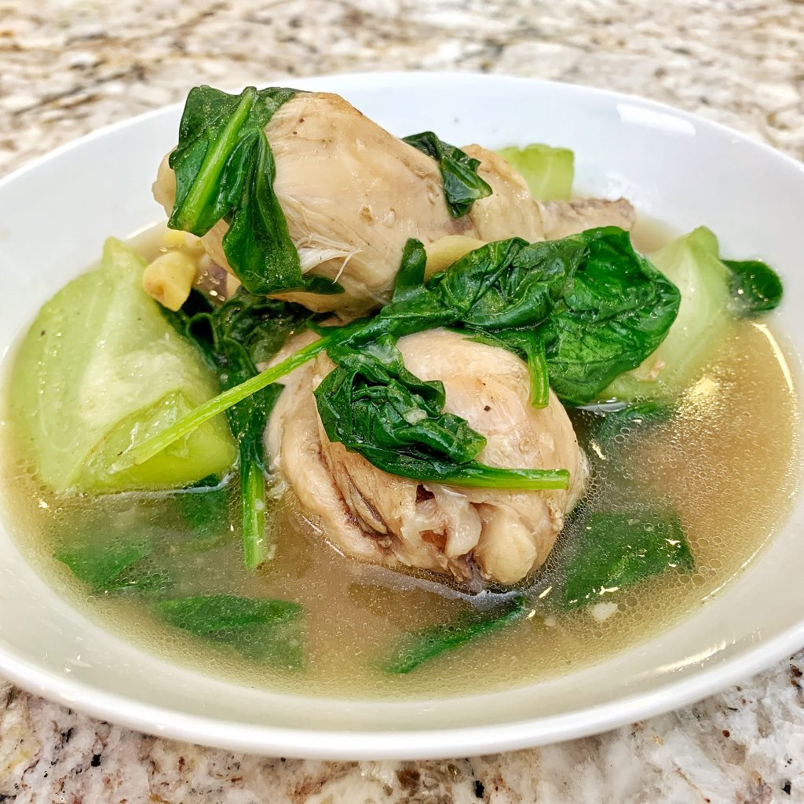

Tinola Recipe

Description
Tinolang manok or chicken tinola is a nourishing Filipino chicken soup.
It can consist of various chicken cuts and internal organs cooked in
a flavorful broth alongside green papaya and chili pepper or malunggay
leaves. The broth is usually generously seasoned with ginger, garlic,
and fish sauce, and the soup is often served over plain white rice.
Chicken tinola is a staple in every Filipino household and can be enjoyed
as a starter or a hearty main course.
Source
Ingredients
- 1 tbsp cooking oil
- 1 pc onion, small -sized, chopped
- 2 cloves garlic, chopped
- 51 pc ginger, cut into strips
- ½ kilo chicken, cut into 8 pcs
- 4 cups water
- 1 pc chayote or 1 pc small - sized green papaya, sliced
- stalks moringa leaves
- 2 pcs Knorr chicken cubes
Steps
- Get a pot and bring it up to medium heat before pouring in the oil.
Drop in the onions, garlic and ginger and sauté slowly for about
2 minutes or until you can smell the lovely aroma.
- It's time to drop in the chicken pieces and stir until it turns
white or light brown in color.
- Pour in the water and add your Knorr Chicken Broth cubes. Bring this
to a simmer until chicken is tender and cooked through.
- You can now add your sayote or green papaya and cook until tender.
- Dahon ng sili is added at the last stage to ensure leaves (and nutrients)
don't dry up. Give this a minute then it is done. Malunggay is also
another healthy alternative because it is packed with vitamins and
minerals which are good for nursing moms and kids as well.
- Enjoy this with patis and calamansi on the side. See the faces of your
whole family light up as you bring this to the table.